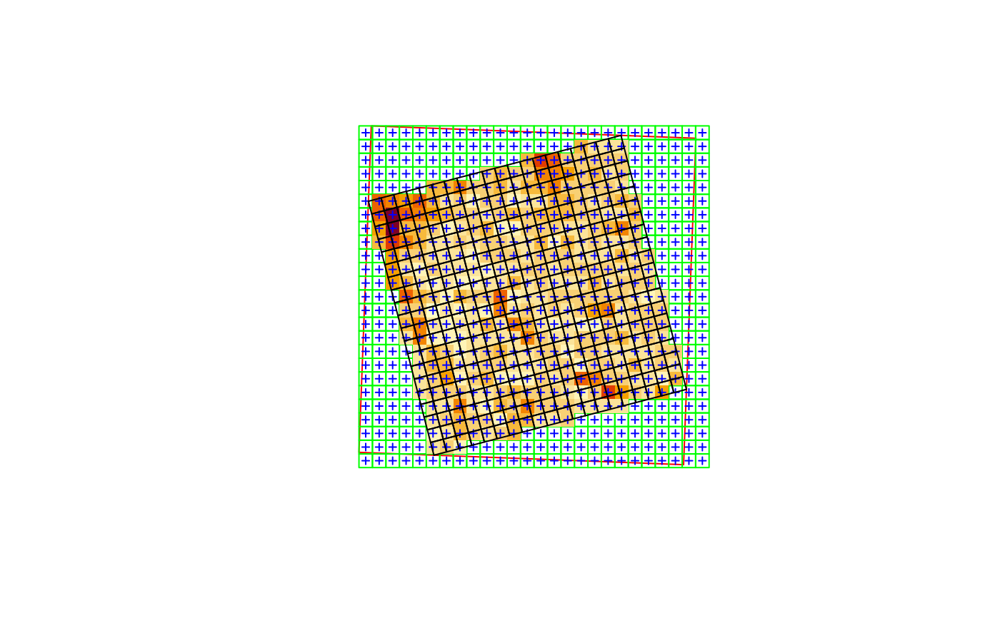
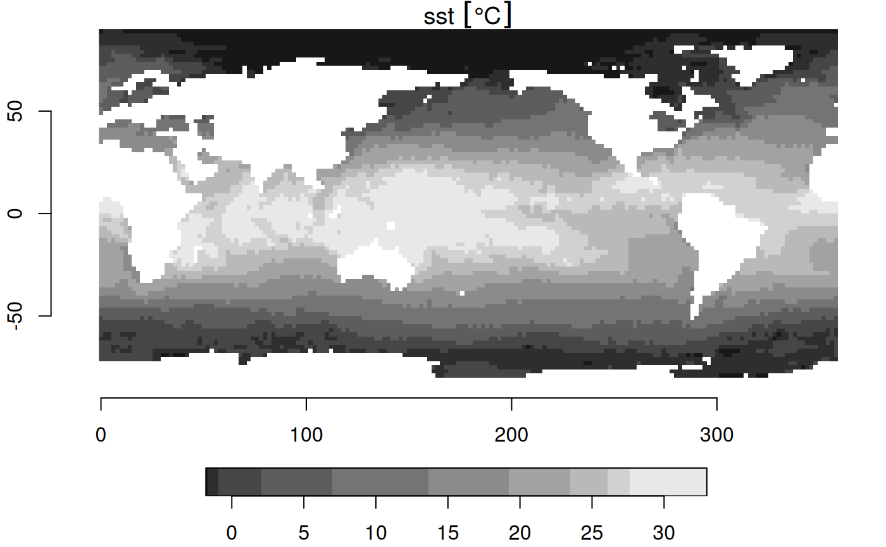

Warp (resample) grids in stars objects to a new grid, possibly in an new coordinate reference system
Source:R/warp.R
st_warp.RdWarp (resample) grids in stars objects to a new grid, possibly in an new coordinate reference system
Usage
st_warp(
src,
dest,
...,
crs = NA_crs_,
cellsize = NA_real_,
segments = 100,
use_gdal = FALSE,
options = character(0),
no_data_value = NA_real_,
debug = FALSE,
method = "near",
threshold = NA_real_
)Arguments
- src
object of class
starswith source raster- dest
object of class
starswith target raster geometry- ...
ignored
- crs
coordinate reference system for destination grid, only used when
destis missing- cellsize
length 1 or 2 numeric; cellsize in target coordinate reference system units
- segments
(total) number of segments for segmentizing the bounding box before transforming to the new crs
- use_gdal
logical; if
TRUE, use gdal's warp or warper, through gdal_utils- options
character vector with options, passed on to gdalwarp
- no_data_value
value used by gdalwarp for no_data (NA) when writing to temporary file; not setting this when
use_gdalisTRUEleads to a warning- debug
logical; if
TRUE, do not remove the temporary gdalwarp destination file, and print its name- method
character; see details for options; methods other than
nearonly work whenuse_gdal=TRUE- threshold
numeric; distance threshold for warping curvilinear grids: new cells at distances larger than threshold are assigned NA values.
Details
method should be one of near, bilinear, cubic, cubicspline, lanczos, average, mode, max, min, med, q1 or q3; see https://github.com/r-spatial/stars/issues/109
For gridded spatial data (dimensions x and y), see figure; the existing grid is transformed into a regular grid defined by dest, possibly in a new coordinate reference system. If dest is not specified, but crs is, the procedure used to choose a target grid is similar to that of projectRaster. This entails: (i) the envelope (bounding box polygon) is transformed into the new crs, possibly after segmentation (red box); (ii) a grid is formed in this new crs, touching the transformed envelope on its East and North side, with (if cellsize is not given) a cellsize similar to the cell size of src, with an extent that at least covers x; (iii) for each cell center of this new grid, the matching grid cell of x is used; if there is no match, an NA value is used.
Examples
geomatrix = system.file("tif/geomatrix.tif", package = "stars")
(x = read_stars(geomatrix))
#> stars object with 2 dimensions and 1 attribute
#> attribute(s):
#> Min. 1st Qu. Median Mean 3rd Qu. Max.
#> geomatrix.tif 74 107 123 126.765 132 255
#> dimension(s):
#> from to offset delta refsys point x/y
#> x 1 20 1841002 1.5 WGS 84 / UTM zone 11N TRUE [x]
#> y 1 20 1144003 -1.5 WGS 84 / UTM zone 11N TRUE [y]
#> sheared raster with parameters: -5 -5
new_crs = st_crs('OGC:CRS84')
y = st_warp(x, crs = new_crs)
plot(st_transform(st_as_sfc(st_bbox(x)), new_crs), col = NA, border = 'red')
plot(st_as_sfc(y, as_points=FALSE), col = NA, border = 'green', axes = TRUE, add = TRUE)
image(y, add = TRUE, nbreaks = 6)
plot(st_as_sfc(y, as_points=TRUE), pch=3, cex=.5, col = 'blue', add = TRUE)
plot(st_transform(st_as_sfc(x, as_points=FALSE), new_crs), add = TRUE)

# warp 0-360 raster to -180-180 raster:
r = read_stars(system.file("nc/reduced.nc", package = "stars"))
#> sst, anom, err, ice,
r %>% st_set_crs('OGC:CRS84') %>% st_warp(st_as_stars(st_bbox(), dx = 2)) -> s
plot(r, axes = TRUE) # no CRS set, so no degree symbols in labels

plot(s, axes = TRUE)
 # downsample raster (90 to 270 m)
r = read_stars(system.file("tif/olinda_dem_utm25s.tif", package = "stars"))
r270 = st_as_stars(st_bbox(r), dx = 270)
r270 = st_warp(r, r270)
# downsample raster (90 to 270 m)
r = read_stars(system.file("tif/olinda_dem_utm25s.tif", package = "stars"))
r270 = st_as_stars(st_bbox(r), dx = 270)
r270 = st_warp(r, r270)